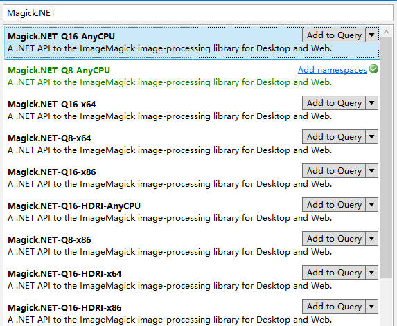

原文连接:https://www.cnblogs.com/sdflysha/p/20191226-read-camera-raw-using-dotnet-2.html
再聊.NET解相机RAW格式照片
上次我发了一篇文章《用.NET解索尼相机ARW格式照片》，提到通过安装Sony Raw File Decoder的方式，然后调用Windows Imaging Components来解析RAW格式文件。后来我经过进一步研究、探索，发现还有更简单的办法。
新的方法实在是太简单、好用了，相比之下，我前一篇文章简直就是在“挖坑”。
其实啥都不装，什么相机都支持！
其实Windows 10自带了一个RAW格式解码器，也集成在Windows Imaging Components中，通过SharpDX.Direct2D1的几行代码，可以将这个解码器的信息调出来：
// 安装NuGet包：SharpDX.Direct2D1
using var wic = new ImagingFactory2();
using var decoder = new BitmapDecoder(wic, file, DecodeOptions.CacheOnDemand);
string json = JsonSerializer.Serialize(decoder.DecoderInfo, new JsonSerializerOptions { WriteIndented = true });
Console.WriteLine(json);运行结果如下（为突出重点，有少量删减）：
{
"PixelFormats": [
"6fddc324-4e03-4bfe-b185-3d77768dc90d"
],
"ColorManagementVersion": "1.0.0.0\u0000",
"MimeTypes": "image/3FR,image/ARI,image/ARW,image/BAY,image/CAP,image/CR2,image/CR3,image/CRW,image/DCS,image/DCR,image/DRF,image/EIP,image/ERF,image/FFF,image/IIQ,image/K25,image/KDC,image/MEF,image/MOS,image/MRW,image/NEF,image/NRW,image/ORF,image/ORI,image/PEF,image/PTX,image/PXN,image/RAF,image/RAW,image/RW2,image/RWL,image/SR2,image/SRF,image/SRW,image/X3F,image/DNG\u0000",
"FileExtensions": ".3FR,.ARI,.ARW,.BAY,.CAP,.CR2,.CR3,.CRW,.DCS,.DCR,.DRF,.EIP,.ERF,.FFF,.IIQ,.K25,.KDC,.MEF,.MOS,.MRW,.NEF,.NRW,.ORF,.ORI,.PEF,.PTX,.PXN,.RAF,.RAW,.RW2,.RWL,.SR2,.SRF,.SRW,.X3F,.DNG\u0000",
"ContainerFormat": "fe99ce60-f19c-433c-a3ae-00acefa9ca21",
"IsAnimationSupported": false,
"IsChromakeySupported": false,
"IsLosslessSupported": true,
"IsMultiframeSupported": false,
"Author": "Microsoft Corporation\u0000",
"Version": "10.0.18362.1\u0000",
"SpecVersion": "1.0.0.0\u0000",
"FriendlyName": "Microsoft Raw Image Decoder\u0000",
"ComponentType": 1,
"CLSID": "41945702-8302-44a6-9445-ac98e8afa086",
"SigningStatus": 1,
"VendorGUID": "f0e749ca-edef-4589-a73a-ee0e626a2a2b",
}可见，什么都不用装，就已经支持了高达36种RAW格式文件，索尼的.ARW、佳能的.CR2和.CR3和尼康的.NEF都在列——就可能就是为什么Windows 10可以直接打开相机的RAW格式文件。
使用上次文章中的同样代码，即可将.ARW格式文件转换为jpeg：
// 依赖于WPF，不用装NuGet包
var decoder = BitmapDecoder.Create(new Uri(@"DSC05458.ARW"), BitmapCreateOptions.None, BitmapCacheOption.Default);
var transformedBitmap = new TransformedBitmap(decoder.Frames[0], Transform.Identity);
var jpg = new JpegBitmapEncoder();
jpg.Frames.Add(BitmapFrame.Create(transformedBitmap));
using var stream = new MemoryStream();
jpg.Save(stream);上次还挖了个坑说如果是我，一般会选择用SharpDX而不是WPF，但我又没说SharpDX的代码该怎么写，这里面我将SharpDX的代码贴出来（运行效果完全一样）：
// 安装NuGet包：SharpDX.Direct2D1
using var wic = new ImagingFactory2();
using FormatConverter converter = LoadImage(wic, @"DSC00115.ARW");
Util.Image(SaveToJpeg(wic, converter)).Dump();
static byte[] SaveToJpeg(ImagingFactory2 wic, BitmapSource source)
{
using var ms = new MemoryStream();
using (var encoder = new JpegBitmapEncoder(wic, ms))
{
using (var frame = new BitmapFrameEncode(encoder))
{
frame.Options.ImageQuality = 0.7f;
frame.Initialize();
frame.WriteSource(source);
frame.Commit();
}
encoder.Commit();
}
return ms.ToArray();
}
static FormatConverter LoadImage(ImagingFactory2 wic, string file)
{
using var decoder = new BitmapDecoder(wic, file, DecodeOptions.CacheOnDemand);
decoder.Dump();
var converter = new FormatConverter(wic);
converter.Initialize(decoder.GetFrame(0), PixelFormat.Format32bppPBGRA);
return converter;
}代码中我加入了缩放，运行上次的.ARW文件后，可以得出一样的jpeg图片。
跨平台？没问题！
故名思义Windows Imaging Componnets，显然只有Windows上才能运行。想跨平台读取相机RAW格式文件就必须另找一个库——Magick.NET，其使用也非常简单，甚至比WIC更简单，只要两行代码！：
// 安装NuGet包：Magick.NET-Q8-AnyCPU
using var image = new MagickImage(@"DSC00115.ARW");
byte[] bytes = image.ToByteArray(MagickFormat.Jpeg);除了读取保存，Magick.NET还能缩放图片、转换pdf、加水印、读取Exif数据、无损压缩、绘图等功能，具体功能可以参见：https://github.com/dlemstra/Magick.NET/blob/master/docs/Readme.md。
另外，Magick.NET还支持超过200种图片格式，其中甚至还包括Photoshop的psd文件。可以在这个链接中查看是否支持你所需要的格式：https://imagemagick.org/index.php
……更别它还可以跨平台。
有一点需要注意，它的NuGet包有许多个，初一看可能会一惊：

这里可以说一下，首先它有Q8、Q16和Q16-HDRI三种版本：
Q8表示一个像素使用8位颜色深度，它占用内存最小；Q16表示一个像素使用16位颜色深度，比Q8多一倍；Q16-HDRI则使用32位浮点型来表示颜色，比Q16再多一倍；
正常使用建议Q8即可，有微单/单反修图需求的，可以考虑Q16/Q16-HDRI。
另外它还有x86、x64和AnyCPU三个平台版本，一般选AnyCPU，但注意Magick.NET是基于本地代码，因此它需要下载多个平台，因此AnyCPU大小(45.34MB)比x64（20.85MB）大一倍。
缺点？
有这么多优点，还要什么自行车？……其实它也是有缺点的，有个明显的缺点，就是性能慢。我测试了上次那张ARW格式文件，性能分析如下（平均需要3.7秒）：
| 次数 | 分配内存 | 内存提高 | 耗时 |
|---|---|---|---|
| 1 | 43,918,792 | 1,080 | 3739 |
| 2 | 43,884,944 | 160 | 3748 |
| 3 | 43,966,000 | 664 | 3878 |
| 4 | 44,015,928 | 80 | 3778 |
| 5 | 43,902,784 | 416 | 3747 |
换成WIC，性能数据如下，耗时只要705毫秒，明显快得多：
| 次数 | 分配内存 | 内存提高 | 耗时 |
|---|---|---|---|
| 1 | 11,939,072 | 1,488 | 713 |
| 2 | 11,939,768 | 10,256 | 709 |
| 3 | 12,013,872 | 4,608 | 705 |
| 4 | 11,931,664 | 96 | 705 |
| 5 | 11,919,384 | -25,968 | 704 |
总结
如果你用Windows 10，则什么都不用装，就能体验到极致性能的RAW解析工具，因为系统自带了Microsoft Raw Image Decoder。
如果你想跨平台（但不特别在意性能），则可以使用开源的Magick.NET，它提供最便利的API和最省心的功能、格式支持，特别强大。但话又说回来，RAW这种东西一般都是骚操作才需要，谁在意跨平台呢？
我也特意试了一下收费的Aspose.Imaging，但解析RAW格式文件不是它的长项，直接不支持。
本想研究一下libraw，但它只提供了C API——也不是不能用。正准备用P/Invoke时刚正面就有了本文中的发现。
喜欢的朋友 请关注我的微信公众号：【DotNet骚操作】